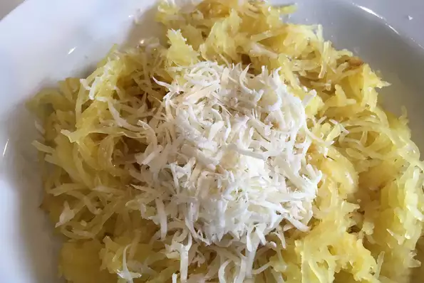

Lovely Tuna Spaghetti

Description
This is a super easy recipe for spaghetti squash that I
often eat for lunch when looking for something healthy and quick.
Ingredients
- 1 spaghetti squash
- 1 tablespoon extra-virgin olive oil
- salt & pepper
- ~1 tablespoon Parmesan cheese